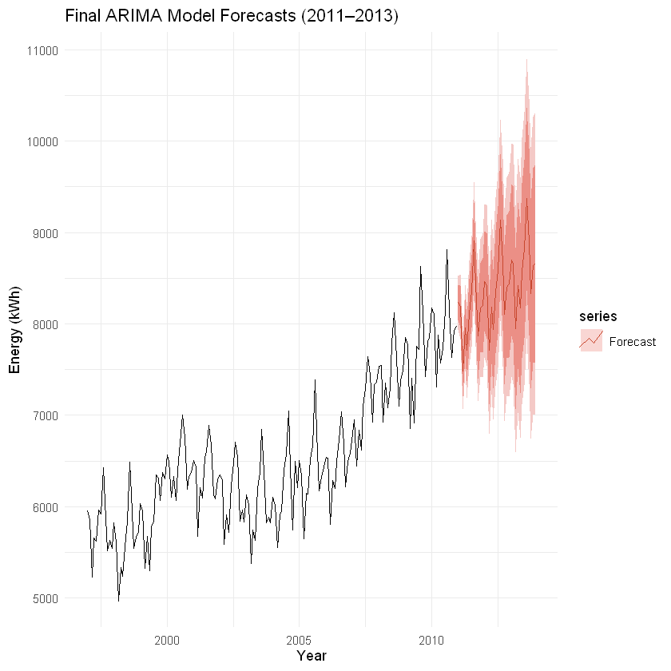
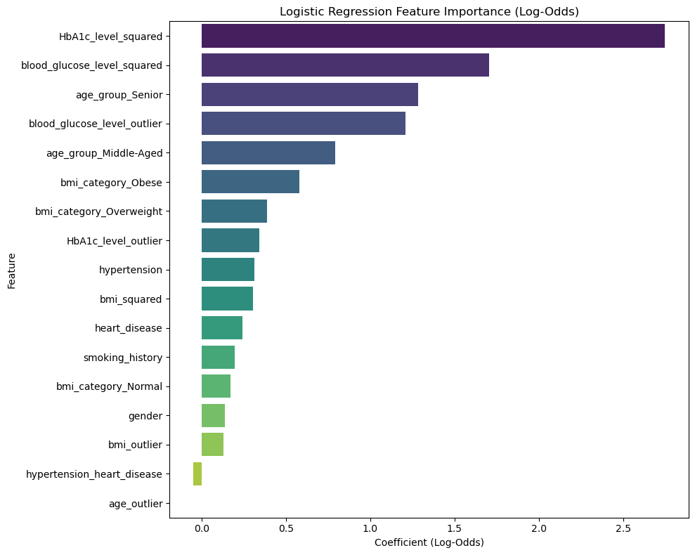
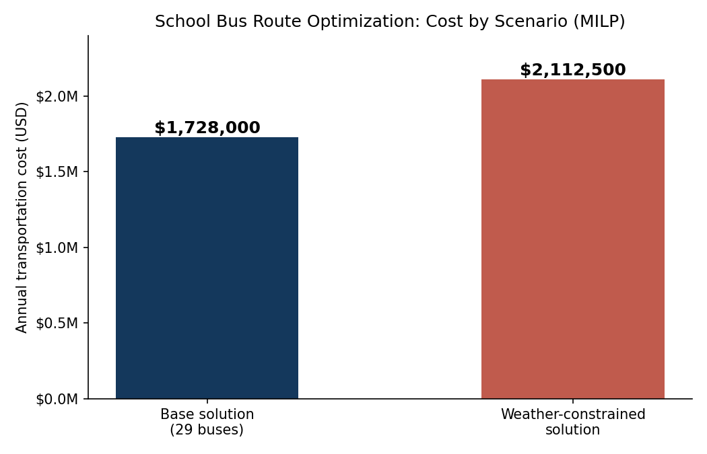

Seasonal ARIMA on 14 years of monthly energy data for Vancouver International Airport; 3-year projections supporting procurement planning.
MAPE 1.7%ARIMA + Box-Cox
Logistic regression screening followed by random forest diagnosis, reducing unnecessary lab tests while preserving sensitivity.
F1 0.87-30% lab tests95% sensitivity
MILP model reassigning 2,000 students after a school closure under capacity, grade-distribution, and distance constraints.
$1.73M/yr base29 busesVAR vs LASSO vs LSTM on 2017-2019 data; LASSO wins with 12 features auto-selected from 30+ candidates.
MSE 5.87TF-IDF + Word2Vec over 5,481 SEC 10-K filings (358 firms, 1994-2020); competitor mapping and growth analysis for HCA Healthcare.
99.6% similarity matchTelehealth 24.7% CAGRMaster of Business Analytics (MBAN), UBC Sauder School of Business · Nov 2025
BA in Economics, Minor in Commerce, UBC · May 2024 · graduated with distinction
CFA Level II Candidate